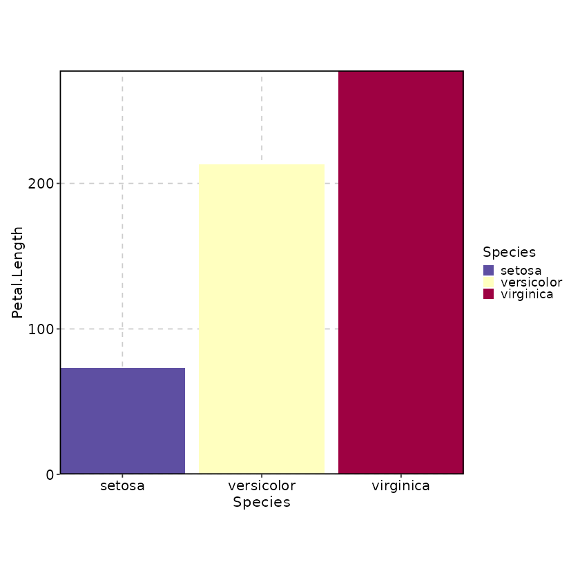
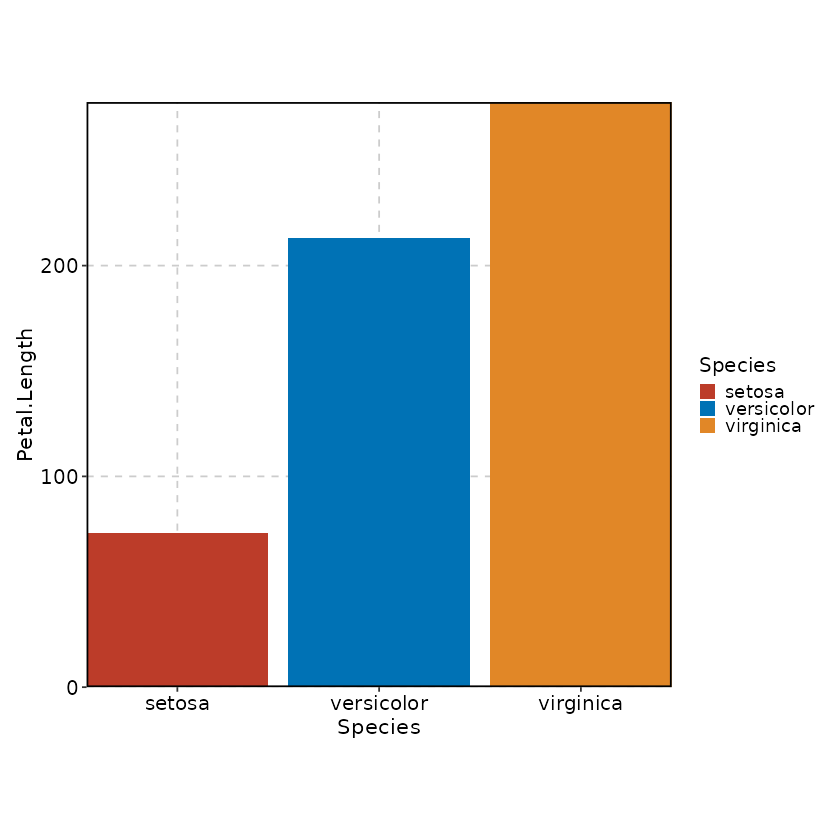
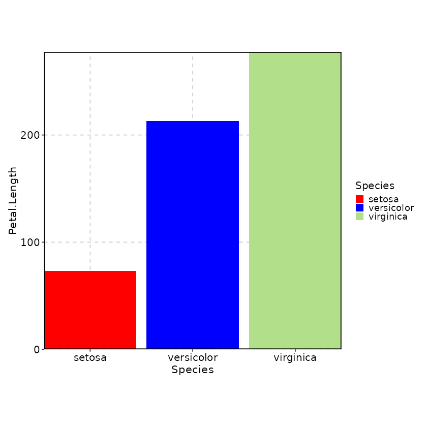
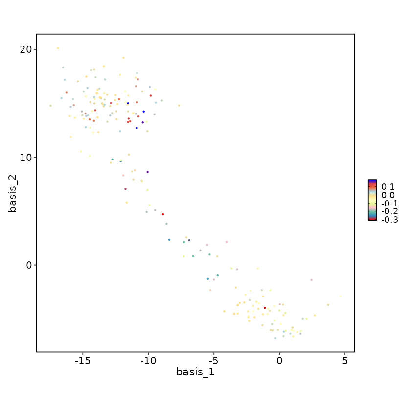
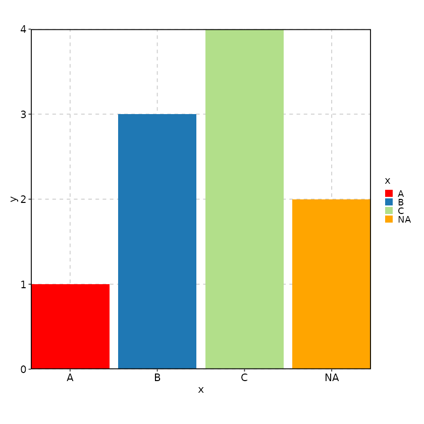
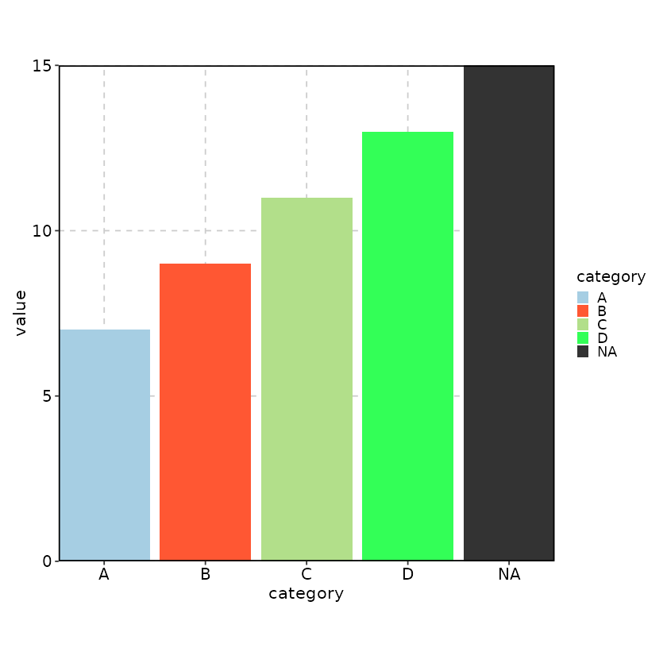
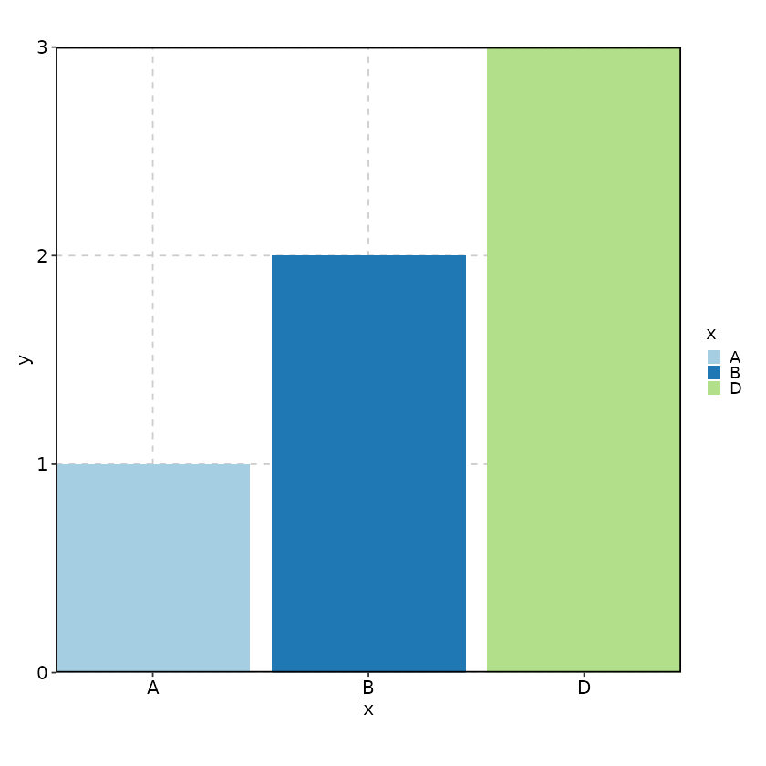
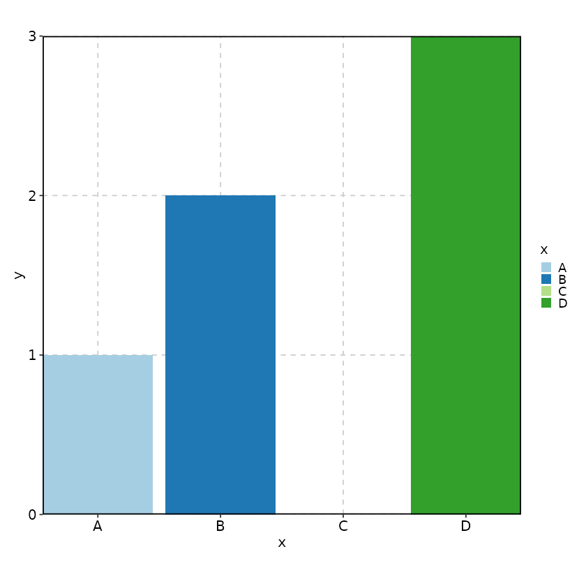

Color palettes
Available color palettes
The package provides a set of color palettes that are widely used. They are from different packages or used in different tools, including:
-
viridisfrom theviridispackage -
brewer.pal.infofrom theRColorBrewerpackage -
ggsci_dbfrom theggscipackage -
redmonder.pal.infofrom theRedmonderpackage -
metacartocolorsfrom thercartocolorpackage -
nord_palettesfrom thenordpackage - The
oceanpalettes ofsyspalsfrom thepalspackage -
colorschemesfrom thedichromatpackage - Some custom palettes including those from
jcolorspackage
All the above palettes are provided by the SCP
package. In addition, the SCP package also provides a set
of color palettes that are widely used in single-cell analysis,
including:
- The discrete colour palettes
DiscretePalettefrom theSeuratpackage -
scales::hue_palused bySeurat
See also the following documentation for more details:
Using palette and palcolor arguments to
control the colors in the plots
Most plotting functions in plotthis support two
arguments to control colors: palette and
palcolor. These arguments provide flexible color
customization while maintaining consistency with predefined
palettes.
The palette argument
The palette argument specifies which predefined color
palette to use. You can view all available palettes with
show_palettes(). For example:
# Use the "Spectral" palette
BarPlot(data = iris, x = "Species", y = "Petal.Length", palette = "Spectral")
# Use the "nejm" palette from ggsci
BarPlot(data = iris, x = "Species", y = "Petal.Length", palette = "nejm")
The palette serves as the foundation for color generation. Colors are automatically assigned based on the number of categories or the range of continuous values in your data.
The palcolor argument
The palcolor argument allows you to override specific
colors from the palette. The behavior differs for discrete and
continuous color scales:
For discrete colors (categorical data)
Use a named vector where names correspond to categories in your data. The function will use the palette as the base and replace only the specified colors:
# Replace specific category colors
BarPlot(
data = iris,
x = "Species",
y = "Petal.Length",
palette = "Paired",
palcolor = c("setosa" = "red", "versicolor" = "blue")
)
# "virginica" will still use the color from the "Paired" paletteFor continuous colors (numeric data)
Use a positional vector where NA values
indicate positions to keep from the palette, and non-NA values replace
specific positions. The replacement happens evenly
distributed across the base palette colors:
data(dim_example)
FeatureDimPlot(
data = dim_example,
features = "stochasticbasis_1",
palette = "Spectral",
# With 5 colors and 11 palette colors, positions are chosen evenly:
# round(seq(1, 11, length.out = 5)) = c(1, 4, 6, 9, 11)
# Colors at positions 1, 4, 9, 11 are replaced (position 6 is NA, so kept):
# "red" "#3288BD" "#66C2A5"
# "pink" "#E6F598" "#FFFFBF"
# "#FEE08B" "#FDAE61" "lightblue"
# "#D53E4F" "blue"
palcolor = c("red", "pink", NA, "lightblue", "blue")
)
The positions are calculated evenly across the palette, so: - With 2
values in palcolor: replaces first and last colors - With 3
values: replaces first, middle, and last colors - With NA
values: keeps the original palette color at that position
Customizing NA colors
You can specify the color for NA values using the
"NA" key in palcolor:
data <- data.frame(x = c("A", NA, "B", "C"), y = c(1, 2, 3, 4))
BarPlot(
data = data,
x = "x", y = "y",
palette = "Paired",
palcolor = c("A" = "red", "NA" = "orange"),
# NA values by default will be dropped
keep_na = TRUE
)
Complete example
Here’s a comprehensive example showing how palette and
palcolor work together:
data <- data.frame(
category = c("A", "B", "C", "D", NA, "A", "B", "C", "D", NA),
value = c(1, 2, 3, 4, 5, 6, 7, 8, 9, 10)
)
BarPlot(
data = data,
x = "category",
y = "value",
palette = "Paired", # Base palette
# "A" and "C" will use colors from the "Paired" palette
palcolor = c( # Override specific colors
"B" = "#FF5733", # Custom color for "B"
"D" = "#33FF57", # Custom color for "D"
"NA" = "#333333" # Custom color for NA values
),
keep_na = TRUE # Keep NA values in the plot
)
This design gives you fine-grained control over your plot colors while maintaining the convenience of predefined palettes.
Basic implementation of the plotting functions
Nearly every plotting function in plotthis follows a
three-layer pattern:
*Atomic()(internal) — Core implementation. Takes a single data frame and returns aggplotobject. Handles faceting viafacet_plot(). Does NOT handlesplit_byorcombine.*Plot()(exported) — The public API. Handlessplit_by(splitting data by a column, processingkeep_na/keep_empty, dispatching per split to*Atomic(), then combining results viacombine_plots()).Optional intermediate functions — e.g.
BarPlotSingle,BarPlotGrouped— called by*Atomic()when there are significantly different rendering paths (with vs. withoutgroup_by).
SomePlot <- function(
data,
# Column(s) to split data into independent sub-plots.
# If NULL, all data goes into a single plot.
split_by, split_by_sep,
# Column(s) to group data within each sub-plot (e.g., fill color per group).
group_by, group_by_sep,
# Column(s) for ggplot2 native faceting within each sub-plot.
# Up to 2 columns: 1 → facet_wrap, 2 → facet_grid.
facet_by, facet_scales, facet_nrow, facet_ncol, facet_byrow,
# Theming, colors, and display
theme, theme_args, palette, palcolor, alpha, aspect.ratio,
legend.position, legend.direction, title, subtitle, xlab, ylab,
# NA and empty factor level handling
keep_na, keep_empty,
# Combine control (when split_by is used)
# TRUE (default) → return patchwork; FALSE → return list of individual plots
combine, nrow, ncol, byrow,
# patchwork options passed to wrap_plots()
axes, axis_titles, guides, design,
seed,
...
) {
# 1. Validate arguments
validate_common_args(seed, facet_by = facet_by)
# 2. Prepare and split data
# keep_na/keep_empty are normalized per-column
# Data is split into a named list by split_by levels
datas <- split(data, data[[split_by]])
# 3. Generate one plot per split, dispatching to *Atomic()
plots <- lapply(names(datas), function(nm) {
SomePlotAtomic(
datas[[nm]],
# per-split palette, palcolor, legend settings
palette = palette[[nm]],
palcolor = palcolor[[nm]],
legend.position = legend.position[[nm]],
legend.direction = legend.direction[[nm]],
title = title %||% nm,
...
)
})
names(plots) <- names(datas)
# 4. Combine via patchwork
combine_plots(
plots,
combine = combine,
split_by = split_by,
nrow = nrow, ncol = ncol, byrow = byrow,
axes = axes, axis_titles = axis_titles,
guides = guides, design = design
)
}Key design decisions: - split_by splits data into
separate ggplot objects that are later assembled via
patchwork::wrap_plots(). Each sub-plot has independent
scales and legends. - facet_by uses ggplot2’s
native faceting
(facet_wrap/facet_grid) within a single plot
object. Scales can be shared or free via facet_scales. -
Per-split customization of palette, palcolor,
legend.position, and legend.direction is
supported via named lists keyed by split level names. -
combine = FALSE returns the list of individual plots
instead of a combined patchwork object, useful for custom
assembly.
Splitting vs faceting
plotthis provides two complementary ways to create
multi-panel plots: splitting (via
split_by) and faceting (via
facet_by). Understanding the difference is important for
choosing the right approach:
Splitting (split_by)
- The data is split into separate subsets by the levels of the
split_bycolumn(s). - Each subset produces an independent ggplot object
via the
*Atomic()function. - The individual plots are then combined into one
using
patchwork::wrap_plots(). - Each sub-plot has its own scales and legends
(though legends can be collected via the
guidesargument). -
Per-split customization is supported: you can
specify different
palette,palcolor,legend.position, andlegend.directionfor each split level using named lists. - Use
combine = FALSEto get a list of individual plots instead of a combined patchwork object, useful for further custom assembly. - Splitting works with any plot type, including those
not built on
ggplot2(e.g.,Heatmap,VennDiagram).
Faceting (facet_by)
- Uses ggplot2’s native faceting
(
facet_wrapfor 1 column,facet_gridfor 2 columns). - All facets share a single ggplot object with shared
or free scales (controlled by
facet_scales). - Scales and legends are shared across facets.
- More efficient than splitting for simple layouts — fewer plot objects, faster rendering.
- Up to 2 columns can be used for faceting.
Choosing between them
| Scenario | Recommendation |
|---|---|
| Need per-panel different color palettes or legends | Use split_by
|
| Need independent axis scales per panel | Use split_by
|
| Want simple, shared-scale multi-panel layout | Use facet_by
|
| Plot type doesn’t support faceting (non-ggplot2) | Use split_by
|
| Need both splitting AND faceting | Use both — split_by creates groups of plots,
facet_by facets within each |
Argument naming conventions
The arguments in the plotting functions are named in a consistent
way. _ is used to separate words in the argument names, in
favor of ., unless the argument is passed to a
ggplot2 function (e.g. theme). The
_ is used to separate words in the argument names to make
the argument names more readable and less confusing with the
. in the function names, which could work as a method call.
The argument names are all lowercased.
The height and width attributes
Every plot created by plotthis carries
height and width attributes (in inches). These
are calculated by calculate_plot_dimensions() based on:
- The number of categories on each axis (
n_x,n_y) - The aspect ratio (
aspect.ratio) - Legend position, direction, and label lengths
- Minimum and maximum dimension bounds (3–12 inches by default)
Note: These are estimated dimensions, not the exact rendered size. They are intended as a starting point that you can adjust.
You can use these values to set chunk options in R Markdown:
p <- SomePlot(data, x = "category")Then set chunk options like fig.width = attr(p, "width")
and fig.height = attr(p, "height").
Or to save the plot to a file with the estimated size:
Accessing the plotting data via p$data
Every plot object returned by plotthis retains the
data used for plotting in p$data. This is
useful for inspecting the processed data after transformations like
keep_na/keep_empty handling, aggregation, or
scaling.
For a simple plot without split_by, p$data
contains the data frame as used by the *Atomic()
function:
## # A tibble: 3 × 2
## Species .y
## <fct> <int>
## 1 setosa 50
## 2 versicolor 50
## 3 virginica 50When split_by is used, combine_plots()
row-binds the individual data frames from each
sub-plot. The combined data is stored on the last sub-plot (which
patchwork::wrap_plots() uses as the rendering base), with
each layer retaining its original per-split data explicitly so that
rendering is unaffected. The result is that p$data returns
the combined data uniformly for both simple and split plots:
p <- BarPlot(
data = iris,
x = "Species", y = "Petal.Length",
split_by = "Species"
)
unique(p$data[["Species"]]) # shows the split levels## [1] "setosa" "versicolor" "virginica"
table(p$data[["Species"]]) # counts per split level##
## setosa versicolor virginica
## 50 50 50To inspect the data for a specific split level:
subset(p$data, Species == "setosa")Note that when split_by is used, the combined
p$data is reconstructed from the
individual sub-plot data — it may differ from the original input data
due to per-split processing (keep_na,
keep_empty, aggregation, etc.).
Tracing the ggplot calls for debugging
When options(plotthis.gglogger.enabled = TRUE) is set,
plotthis uses the gglogger
package instead of ggplot2::ggplot(). The
gglogger::ggplot() function records every
ggplot2 layer addition as a log entry, making it easy to
inspect how a plot is constructed.
## Reference class object of class "GGLogs"
## Field "logs":
## [[1]]
## Reference class object of class "GGLog"
## Field "code":
## [1] "ggplot2::ggplot(data, aes(x = !!sym(x), y = !!sym(y), fill = !!sym(fill_by)))"
##
## [[2]]
## Reference class object of class "GGLog"
## Field "code":
## [1] "geom_col(alpha = alpha, width = width, show.legend = TRUE)"
##
## [[3]]
## Reference class object of class "GGLog"
## Field "code":
## [1] "labs(title = title, subtitle = subtitle, x = xlab %||% x, y = ylab %||% "
## [2] " y)"
##
## [[4]]
## Reference class object of class "GGLog"
## Field "code":
## [1] "scale_x_discrete(expand = expand$x, drop = !isTRUE(keep_empty_x))"
##
## [[5]]
## Reference class object of class "GGLog"
## Field "code":
## [1] "scale_y_continuous(expand = expand$y)"
##
## [[6]]
## Reference class object of class "GGLog"
## Field "code":
## [1] "do_call(theme, theme_args)"
##
## [[7]]
## Reference class object of class "GGLog"
## Field "code":
## [1] "ggplot2::theme(aspect.ratio = aspect.ratio, legend.position = legend.position, "
## [2] " legend.direction = legend.direction, panel.grid.major = element_line(colour = \"grey80\", "
## [3] " linetype = 2), axis.text.x = element_text(angle = x_text_angle, "
## [4] " hjust = just$h, vjust = just$v))"
##
## [[8]]
## Reference class object of class "GGLog"
## Field "code":
## [1] "scale_fill_manual(name = fill_name %||% fill_by, na.value = colors[\"NA\"] %||% "
## [2] " \"grey80\", values = colors, guide = fill_guide)"
##
## [[9]]
## Reference class object of class "GGLog"
## Field "code":
## [1] "coord_cartesian(ylim = c(y_min, y_max))"This is useful for debugging (seeing exactly what layers and scales were added) and for learning how the plotting functions work internally. Disable it when not needed to avoid overhead:
options(plotthis.gglogger.enabled = FALSE)Providing extra data via data attributes
Some plotting functions accept large supplementary data (e.g.,
GSEAPlot needs gene ranks and gene sets). Rather than
passing them as separate arguments every time, you can attach them as
attributes of the data frame. The function will
automatically look them up.
Specifically, when an argument defaults to a string starting with
@ (e.g., "@gene_ranks"), the function looks up
the attribute of data with that name (stripping the
@ prefix). This means the following two calls are
equivalent:
# Method 1: Attach extra data as attributes
data <- gsea_result
attr(data, "gene_ranks") <- gene_ranks
attr(data, "gene_sets") <- gene_sets
GSEAPlot(data)
# Method 2: Pass directly as arguments
GSEAPlot(data, gene_ranks = gene_ranks, gene_sets = gene_sets)This pattern is used by GSEAPlot,
GSEASummaryPlot, and other functions that require auxiliary
data beyond the main data frame.
NA values
When NA values appear in grouping or categorical columns used in the
plot (x-axis, fill, color, group, etc.), they are excluded by default.
Use keep_na to control this behavior:
-
FALSE(default): Drop NA values — they are excluded from the plot and legend. -
TRUEorNA: Keep NA values asNA— they are treated as a separate category in the plot and legend. The default color is"grey80"; customize it viapalcolor = c("NA" = "orange"). -
A character string (e.g.,
"missing"): Replace NA values with that string — they become a labeled category in the plot and legend. Color is determined by the palette as usual.
See the palette and palcolor section for details on customizing the NA color.
Unused (Empty) levels of factors
When there are unused levels of factors in the grouping variables or
category variables that are used in the plot (x-axis, fill, color,
group, etc.), they will be included in the plot by default. You can use
keep_empty option to control whether and how to keep the
unused levels of factors.
keep_empty can take 3 values:
-
TRUE: just keep the unused levels of factors as they are, and they will be treated as separate groups or categories. They will be included in the plot and the legend. -
FALSE: drop the unused levels of factors, and they will not be included in the plot or the legend. This is the default behavior. -
"level"or"levels": The unused levels of factors will not be plotted (for example, on x-axis), but they will be included when determining the colors for the groups or categories, and they will not be included in the legend. UseTRUEif you want to include them in the legend.
When keep_empty is TRUE or
"level", the colors for the unused levels of factors will
be determined by palette and palcolor as
usual, even though they are not plotted (they will affect the colors of
existing levels).
data <- data.frame(
# C is an unused level
x = factor(c("A", "B", "D"), levels = c("A", "B", "C", "D")),
y = c(1, 2, 3)
)
# Excluded by default
BarPlot(
data = data,
x = "x", y = "y"
)
# Keep the unused level "C"
BarPlot(
data = data,
x = "x", y = "y",
keep_empty = TRUE
)
# Keep the unused level "C" for color assignment but not plotting
BarPlot(
data = data,
x = "x", y = "y",
keep_empty = "level"
)
Variable-level control of keeping NA values and unused levels of factors
The keep_na and keep_empty arguments can
also take a named list to control the behavior for each variable
separately. The names of the list should correspond to the variables in
the data. For example:
data <- data.frame(
x = factor(c("A", NA, "B", "D"), levels = c("A", "B", "C", "D")),
group = factor(c("G3", "G1", NA, "G3"), levels = c("G1", "G2", "G3")),
y = c(1, 2, 3, 4)
)
BarPlot(
data = data,
x = "x", y = "y", fill_by = "group",
keep_empty = list(x = TRUE, group = "level"),
keep_na = list(x = FALSE, group = TRUE)
)